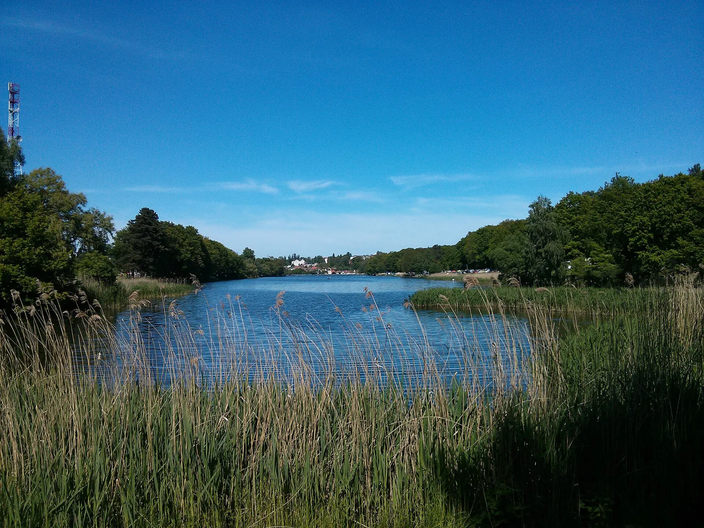
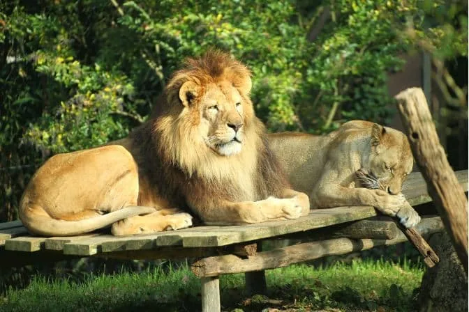
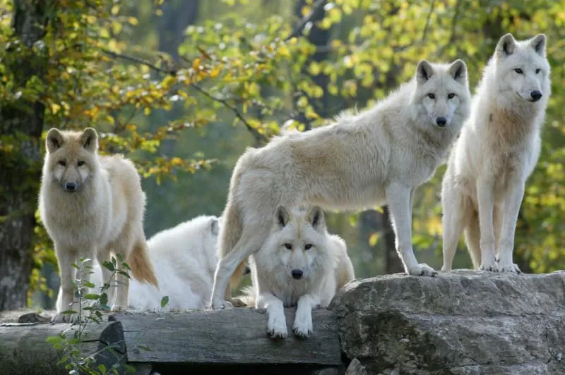
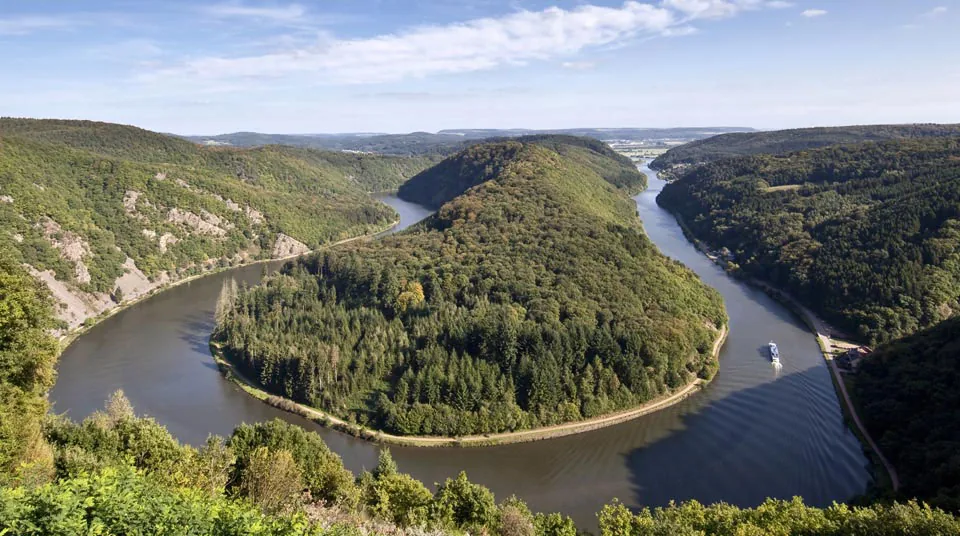

乡村度假公寓 · 瓦尔斯贝格 · 摩泽尔
旅游与休闲
徒步小径从度假公寓直接出发，无需穿越公路，可徒步、骑行或骑马。多处名胜距此仅几公里。
周边值得一看

克罗茨瓦尔德湖与水上运动中心帆船、游泳、垂钓与环湖漫步。
3 km
3 km

圣阿沃尔德美军公墓欧洲最大的美军公墓。
12 km
12 km

Les Mineurs Wendel 矿业博物馆，小罗塞勒矿井与洛林矿工的生活。
15 km
15 km

弗尔克林根钢铁厂联合国教科文组织世界遗产，就在边境另一侧。
30 km
30 km

布利斯布鲁克–赖因海姆考古公园一座高卢–罗马城镇及其浴场。
40 km
40 km

梅斯蓬皮杜中心现代与当代艺术，梅斯大教堂近在咫尺。
47 km
47 km

阿姆内维尔动物园18 公顷内有 2000 多只动物。
55 km
55 km

圣十字动物公园洛林地区自然公园中的狼、熊、鹿与野牛。
60 km
60 km

萨尔河湾，梅特拉赫从 Cloef 观景台俯瞰萨尔河壮观的河湾。
80 km
80 km
瓦尔斯贝格、瓦恩特森林与田野


休闲
- 水上运动3 km
- 游泳池3 km
- 垂钓3 km
- 网球3 km
- 徒步就地
- 骑马就地
- 福尔克蒙高尔夫球场15 km
- 森林就地
- 圣阿沃尔德火车站6 km
- 面包店、商店就地
- 萨尔布吕肯 Calypso 水上乐园35 km